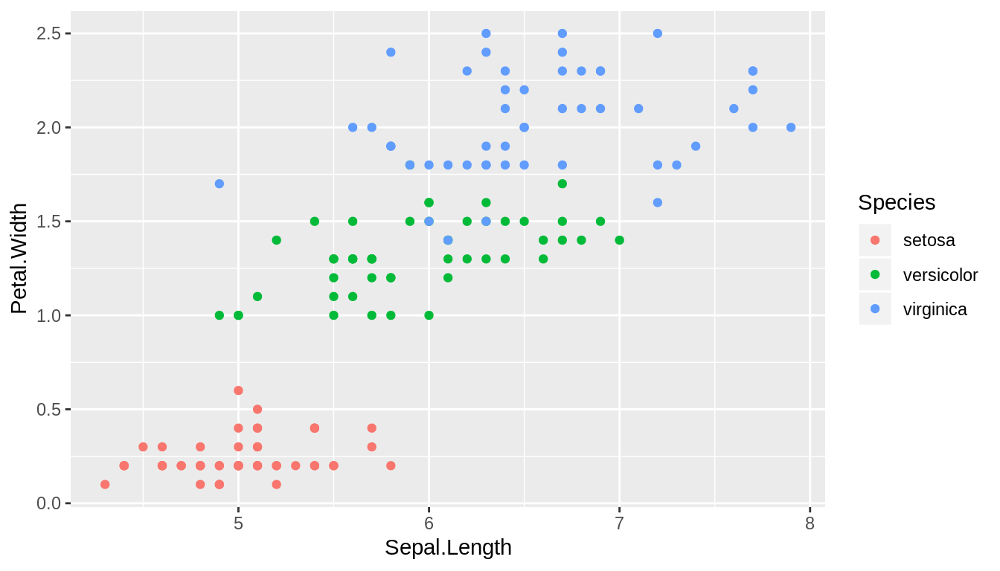

According to the post add your blog, adding one’s blog to R-bloggers isn’t easy at all, especially for people who use R Markdown to write posts and use Jekyll to generate static web page on GitHub.
Two reasons make it difficult:
The feed you submit should ONLY be about R (e.g: with R code, or directly related to the R world/community).
Make sure the HTML of your feed’s content is well formatted – otherwise it would not be able to load on r-bloggers. This includes to NOT copy-pasting from RStudio’s notebook extension – the feed should NOT include “base64” images, make sure your images are saved as png or similar file formats.
plot()) are base64 images.For Jekyll sites using jekyll-feed plugin to generate sitemaps, it is not possible to have RSS feed for a particular tag or category of posts. However there’s a workaround using Jekyll’s Liquid syntax to write an RSS template, as indicated by this post. I modified the template to make it suitable for the criteria set by R-bloggers, you can take a look at the file feed.rbloggers.xml.
To fix the second problem, set self_contained: false in the yaml header of the R Markdown document. With this setting, plots from code chunks are automatically generated in a figure directory, and the .html output uses <img> tags to source the plots in that figure directory.
---
output:
html_fragment:
self_contained: false
---However, this creates a problem since the relative path in the <img> tags probably won’t work in the remote directory that hosts your site. To overcome this problem, you have to change the default figure directory and post-process the output .html file.
For example, the source of this post(rblogger-criteria.rmd) is two layers under the root dir of the web site.
+---assets/
| +---rblogger-criteria-img/
+---_includes/
+---_plugins/
+---_posts/
+---post_source/
| +---rblogger-criteria/
| | +---rblogger-criteria.rmd
| | +---rblogger-criteria.html
+---index.html
+---_config.ymlI set my figure directory to assets/rblogger-criteria-img/:
```{r setup, include=FALSE}
knitr::opts_chunk$set(
fig.path = "../../assets/rblogger-criteria-img/"
)
```so when the site is rendered, the image would be in https://liao961120.github.io/assets/rblogger-criteria-img/
The last thing to do is processing the output rblogger-criteria.html and replacing <img src="../../assets with <img src="/assets in the <img> tag. I do this with a simple bash script:
sed "s#<img src=\"../../assets#<img src=\"/assets#g" rblogger-criteria.html > temp
cat temp > rblogger-criteria.htmlBelow is a plot generated from an R Markdown code chunk, you can look at the path in <img> tag with the developer’s tool or the image source to confirm the path of the image is just as mentioned above.
library(ggplot2)
ggplot(iris, aes(Sepal.Length, Petal.Width)) +
geom_point(aes(color = Species))
{kind=link}